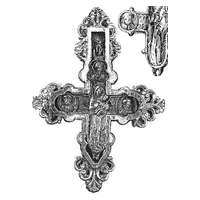

Catalog › CE-0682 · KOR2003-II.1.1.61
Encolpion întreg venerat de la Kupiatîci, cu inel de agățare; Răstignire pe față, Odighitria pe revers
sec. XII (1101–1200) · Kupiatîci, ținutul Pinsk (azi regiunea Brest), Belarus
double-sided reliquary cross (enkolpion), aramă; c. XII (1101–1200); found at Kupiatîci, ținutul Pinsk (azi regiunea Brest), Belarus.


Identificare
- Categorie
- Encolpion bivalv (relicvar)
- Material
- Aramă
- Tehnică
- Turnare în relief
- Stare
- Întreagă
Iconografie
- Descriere avers
- Valva de față: imagini în relief ale Răstignirii, cu busturi frontale ale sfinților în trei medalioane.
- Revers
- Maica Domnului cu Pruncul
- Descriere revers
- Valva de revers: Maica Domnului Odighitria, cu busturi frontale ale sfinților în trei medalioane.
Datare și atribuire
- Datare
- sec. XII (1101–1200)
- Centru
- Necunoscut
- Tipologie
- Korzukhina–Peskova 2003, tip II 1 1
Descoperire
- Localitate
- Kupiatîci
- Regiune
- ținutul Pinsk (azi regiunea Brest)
- Țară
- Belarus
- Context
- Necunoscut
Păstrare și referințe
- Bibliografie
- G. F. Korzukhina, A. A. Peskova, Древнерусские энколпионы. Нагрудные кресты-реликварии XI–XIII вв., Sankt-Petersburg, 2003 [Korzukhina–Peskova 2003], p. 68, cat. nr. II 1 1/61, reprodusă la Табл. 26 (planșe, p. 268). Bibliografie citată în sursă: Холмская Русь 1887, 160; Петров 1893, № 9–10; Петров 1893а, 71–78; Максимова 1988, 352–362; Пуцко 2001, 144–153 (bibliografie pe p. 152–153).
- Figura
- Табл. 26
- Planșe
- Korzukhina–Peskova 2003, Табл. 26 (planșă fără paginație proprie în PDF; p. 268 tipărită)
- Observații
- Datare după Peskova: sec. XII. Circumstanțe: După legendă, a fost arătat (явлен) în satul Kupiatîci în 1182. Locul de păstrare nestabilit; în prezent, după E. I. Arhipova, crucea nu a fost găsită în fondurile Rezervației „Sofia Kievskaia”. Cruce venerată, cu imaginea făcătoare de minuni a Maicii Domnului Odighitria; inițial păstrată în biserica construită special la locul descoperirii; după incendiul din 1240 regăsită abia la sfârșitul sec. XV, a rămas în biserica nouă până la trecerea ei la uniație (1655 sau 1722, după surse), apoi mutată la Catedrala Sf. Sofia din Kiev. Imaginea a primit un înveliș bogat; crucea a fost prinsă pe o placă pătrată aurită într-un ram; la Kiev a fost așezată într-un chivot special în galeria de vest a catedralei, lângă paraclisul Sf. Andrei; în a doua jumătate a sec. XIX în rândul local al iconostasului paraclisului; în 1891 mutată într-un chivot nou lângă unul dintre stâlpii aceluiași paraclis. Desen după Холмская Русь 1887. Coordonate: nu sunt date în sursă.
Citare: Corpus Encolpiorum, CE-0682, Encolpion întreg venerat de la Kupiatîci, cu inel de agățare; Răstignire pe față, Odighitria pe revers, --root/piese/KOR2003-II.1.1.61/ (accesat 2026-10-20).